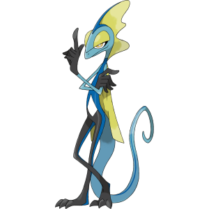
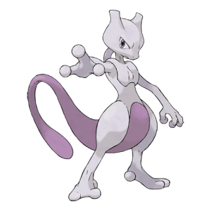
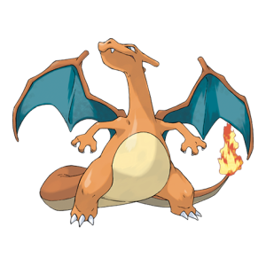

Wat is de populairste Pokemon's?
De Top 3
Veel mensen hebben het er steeds meer over. Welke Pokemon kaarten zijn de coolste en de sterkste. Daaorm gaan we het hebben over de top 3 populairste Pokemon's.
3. Inteleon
Inteleon is een Pokemon uit de 3de generatie. Het is 1 van de 3 starter pokemon's uit de Galar Regio. Steeds meer mensen vinden hem cool door zijn
coole manier van zijn. Elke keer als Ash gaat verliezen komt hij uit de schaduws om de dag te redden.

2. Mewtwo
Mewtwo is 1 van de eerste legendarische Pokemons die door Pokemon is geintroduceerd. Dit is een Pokemon die een lab is gemaakt door team Rocket
om de wereld te vernietigen. Het probleem was dat deze Pokemon door niemand liet manipuleren. Daardoor is deze Pokemon een badass.

1. Charizard
Charizard dit de meest populaire Pokemon. Al hoe de Pokemon is gebouwd is een iconische Pokemon. De vetste Pokemon. Deze Pokemon Kaarten
worden daardoor ook voor 300 euro verkocht. Dit is de Franchise Pokemon.

Bronnen